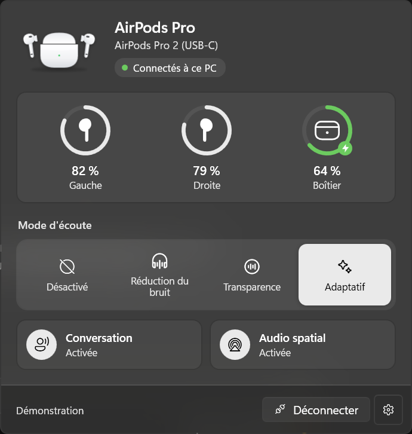
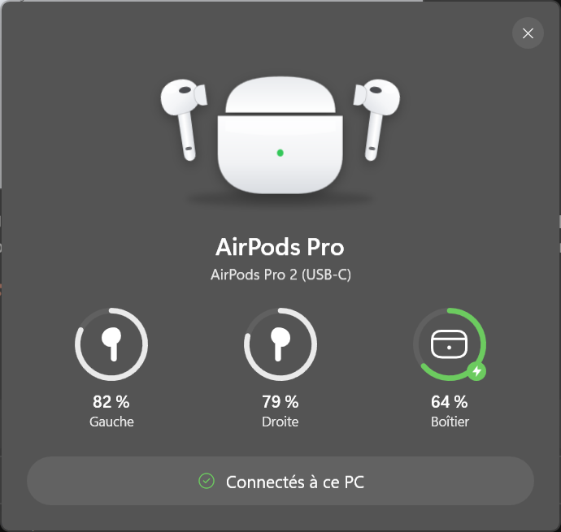
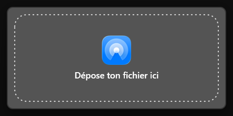
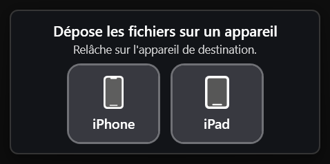

Projets perso · 2021 – 2026 · En cours
Pimp my PC
J'ai toujours aimé customiser : changer l'apparence de mon PC, lui ajouter ce qui lui manque, le rendre vraiment à moi. Cette page regroupe tout ça, de mes premiers bricolages en 2021 à mes projets d'aujourd'hui.
Qui a fait quoi
Windows transformé en macOS (2021) est entièrement mon travail, sans IA. Pour AirPulse et AirDrop, j'ai eu l'idée, défini le design et le comportement, testé sur mon matériel, repéré les bugs et orienté chaque version. Le code, lui, a été écrit en grande partie par Claude.
Trois étapes
- 2021
Windows transformé en macOS. L'interface d'un Mac sur mon PC.
- 2026
AirPulse. Les AirPods avec leur batterie, leur widget et leur bascule PC ↔ iPhone, comme sur Mac.
- 2026
AirDrop maison. Un échange de fichiers entre le PC, l'iPhone et l'iPad.
Windows transformé en macOS
Ma mère avait un Mac, moi un PC, et j'étais un peu jaloux. Je lui en ai demandé un, elle a refusé. Alors j'ai reproduit l'interface du Mac sur mon PC avec Rainmeter, un dock et d'autres outils de personnalisation, à coups de tutos, à l'ancienne.
AirPulse
Sur mon PC, je regardais mes films sans profiter de mes AirPods : pas de réduction de bruit, pas d'audio spatial. Aucune appli ni aucun projet GitHub ne le permettait vraiment, alors j'ai décidé de concevoir la mienne.
Une application pour la zone de notification de Windows 11. Elle affiche la batterie de chaque écouteur et du boîtier, ouvre un widget à l'ouverture du boîtier, prévient avec une bulle quand les AirPods se connectent ou partent sur un autre appareil, met la musique en pause quand on retire un écouteur, et peut basculer automatiquement entre le PC et l'iPhone. Je l'ai testée avec mes AirPods Pro 2.
Mon rôle
L'idée, la liste des fonctions, le design de chaque fenêtre, les tests avec mes AirPods et les bugs à corriger.
Rôle de l'IA
L'écriture du code (C#, .NET, WPF), en suivant mes consignes.
Compétences mobilisées
Captures en mode démonstration.


Une limite repérée : un protocole fermé. En testant, on a vu que les modes d'écoute (réduction de bruit, transparence) passent par un protocole propriétaire d'Apple, inaccessible aux applications Windows. Ils ne marchent qu'avec un pilote libre qui exige le mode test de Windows. J'ai choisi de le rendre facultatif : sans lui, AirPulse fonctionne quand même en Bluetooth LE.
AirDrop maison
Pour passer un fichier entre mon PC, mon iPhone et mon iPad, je m'envoyais tout par WhatsApp. L'appli Windows buguait souvent et refusait les gros fichiers. J'ai eu l'idée d'un petit serveur local qui ferait office d'AirDrop pour le PC, et j'ai laissé Claude coder l'interface et le reste.
Le vrai AirDrop repose sur un Wi-Fi propriétaire d'Apple que Windows ne sait pas utiliser : impossible d'en faire une copie compatible. Dans mon système, le PC héberge un petit serveur sur le Wi-Fi de la maison, et seuls les appareils jumelés peuvent s'y connecter. L'iPhone et l'iPad passent par des Raccourcis iOS, sans application à installer.
Mon rôle
L'idée, le choix de passer par le Wi-Fi et les Raccourcis, le design des deux fenêtres (j'ai fourni les icônes), les tests sur le PC, l'iPhone et l'iPad, et les bugs à corriger.
Rôle de l'IA
L'écriture du code (C#, .NET, serveur HTTP) et l'explication des limites techniques, en suivant mes consignes.
Compétences mobilisées
Comment il marche
- Jumeler
Le PC affiche un code QR que l'iPhone scanne. L'appareil reçoit un jeton secret.
- Envoyer
Un raccourci iOS ajoute « Envoyer au PC » au menu Partager. Le fichier arrive dans un dossier du PC, avec une notification.
- Recevoir
Un second raccourci va chercher ce que le PC a envoyé et le range dans un dossier de l'app Fichiers.
- Déposer
Sur le PC, je maintiens un fichier sur l'icône de la barre des tâches : une petite zone surgit avec l'iPhone et l'iPad, et je lâche le fichier dessus.


Les problèmes que j'ai repérés en testant
- La zone ne s'ouvrait jamais. En maintenant un fichier sur l'icône, rien ne se passait. Après diagnostic, Windows 11 répondait toujours « la barre des tâches » au lieu du bouton visé. Le code a été corrigé pour chercher le bouton lui-même, et j'ai vérifié que ça marchait.
- La mauvaise fenêtre s'ouvrait. Au survol d'un fichier, Windows rouvrait la fenêtre principale au lieu de la petite zone. J'ai demandé que la fenêtre principale ne s'ouvre plus que depuis l'icône près de l'horloge.
- Un iPhone qu'on ne peut pas réveiller. iOS interdit d'écrire dans l'app Fichiers sans action sur l'iPhone, et le PC ne peut pas le réveiller. C'est donc l'iPhone qui va chercher les fichiers, avec le second raccourci.
- Un fichier qui s'ouvre tout seul. Cliquer sur la notification « Fichier reçu » ouvre le fichier. Pour qu'un programme envoyé par erreur ne se lance pas, les fichiers exécutables et les scripts sont seulement montrés dans l'Explorateur.